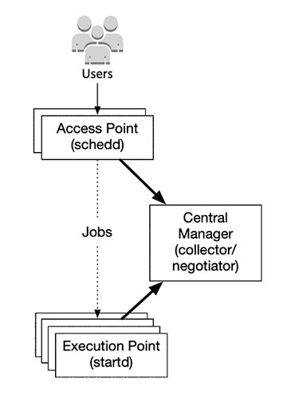
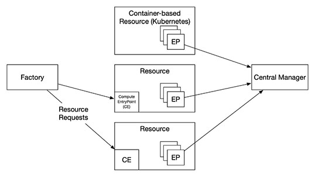
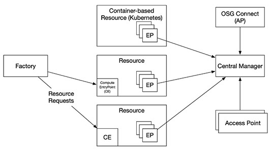

Since the inception of “High Throughput Computing” in 1996 the PATh partners have coined many
terms and concepts to help better describe their computational methodology. Below are the terms
that have been introduced and a description of each.
High Throughput Computing (HTC)
Maximizing the throughput of a computing resource toward a common problem.
Distributed High Throughput Computing (dHTC)
Specialized by the OSG, this involves many independent, collaborating administrative domains.
A consortium dedicated to the advancement of all of Open Science via the practice of distributed High Throughput Computing, and the advancement of its state of the art.
The OSG Consortium provides a fabric of services, including a software stack, that organization scan use to build dHTC environments.
- The OSG owns no clusters and pays no staff.
- It is coordinates the efforts contributed by projects such as the NSF-funded IRIS-HEP and PATh.
- OSG also runs the Open Science Pool.
Provides technologies for creating a dHTC environment.

Access Point
Provided by HTCSS, allows users to place workloads such as jobs, job sets, and DAGs. Can access one or more resource pools to acquire resources.
Execution Point (EP)
Provided by HTCSS, executes jobs.
Central Manager
Provided by HTCSS, locates daemons and allocates shares of the overall resource pool.
Compute Entrypoint (CE)
Provided by HTCSS, submits ‘pilot jobs’ to a remote compute resource.
Open Science Compute Federation (OSCF)
The OSCF provides a set of services for requesting and allocating computing resources and creating dHTC environments.

- The CE, hosted on-prem or off-prem, provide a way for the factory to
send resource requests to a compute resource.
- The factory acts on behalf of an organization the requests resources.
- If HTCSS is used by the organization the resource start and EP and join the Central Manager.
Open Science Pool (OSPool)
An environment for any scientist or group doing open science in the US.

- Any campus, group, or collaboration can attach an access point to the OSPool and receive a share of the resources.
- OSG operates the OSG Connect AP, meant to provide a place for PI-driven groups to place their jobs.
- Users can Bring Your Own Resources (BYOR) to utilize their own resources (such as an XRAC allocation) via the OSPool.